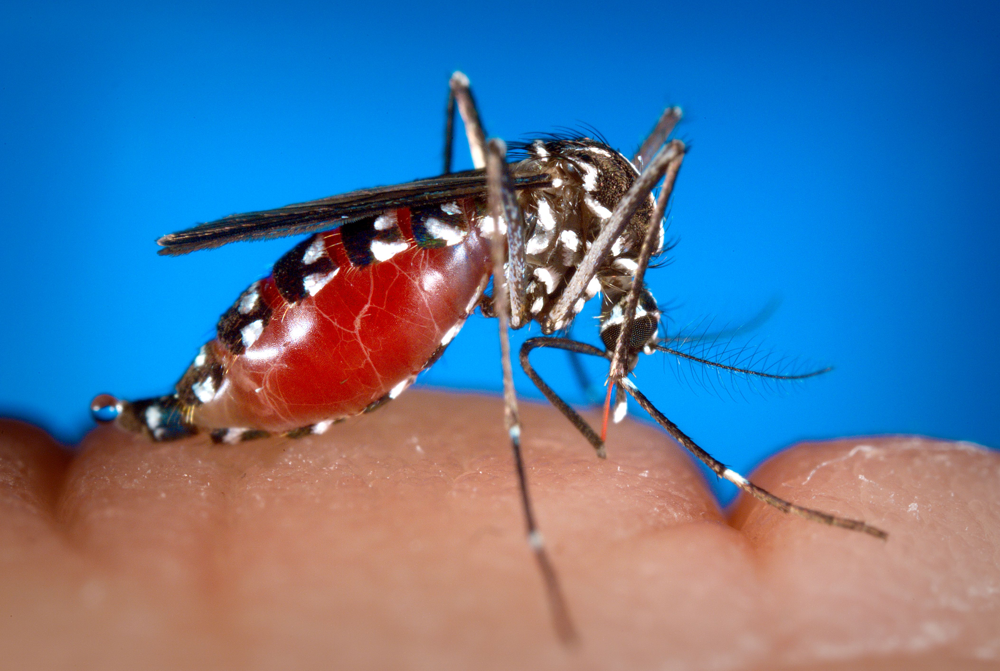
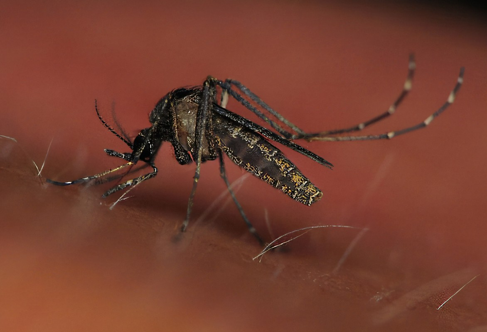
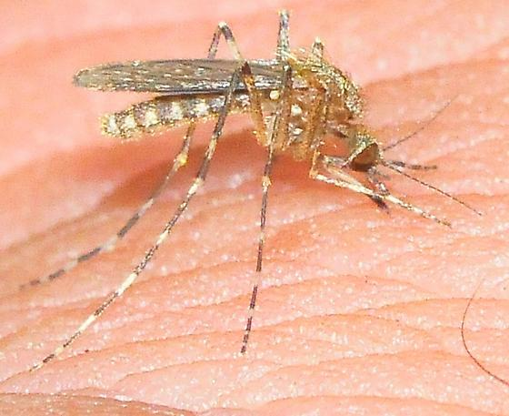
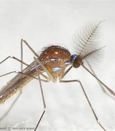
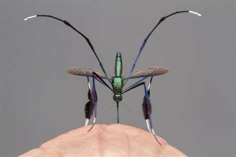

Los mosquitos son insectos voladores pertenecientes a la familia Culicidae, que incluye más de 3,500 especies distribuidas globalmente. Son conocidos por su capacidad para alimentarse de la sangre de diversos animales, incluidos los seres humanos, aunque también se alimentan de néctar y otros líquidos vegetales. Son reconocibles por su cuerpo delgado y alargado, sus alas finas y sus piezas bucales adaptadas para perforar la piel y extraer sangre. Estos insectos tienen una gran importancia ecológica y médica. Desde el punto de vista ecológico, los mosquitos juegan un papel fundamental en muchos ecosistemas como parte de la cadena alimentaria, sirviendo de alimento a peces, aves y murciélagos, entre otros animales. Además, algunas especies de mosquitos participan en la polinización de plantas, contribuyendo a la biodiversidad de muchas especies vegetales. Sin embargo, lo que los hace más conocidos y temidos es su capacidad para transmitir enfermedades infecciosas. Las hembras de los mosquitos son las responsables de esta transmisión, ya que son las que se alimentan de sangre para obtener los nutrientes necesarios para el desarrollo de sus huevos. Al picar a una persona o animal infectado, los mosquitos pueden adquirir patógenos como virus, bacterias o parásitos. Estos patógenos se alojan en el sistema digestivo del mosquito y luego se transmiten a otras personas al alimentarse nuevamente. Entre las enfermedades más comunes transmitidas por los mosquitos se encuentran el dengue, la malaria, el virus del Zika, el chikungunya, la fiebre amarilla y el virus del Nilo Occidental, entre otras.
TIPOS MAS COMUNES Y SUS DIFERENCIAS
Existen varios tipos de mosquitos, y algunos de los más comunes son los del género Aedes, Anopheles y Culex. Cada uno tiene características y comportamientos distintos, lo que les permite estar asociados con diferentes enfermedades. A continuación, te doy una descripción de los tipos más comunes y sus diferencias:
| Especie | Imagen | Características | Hábitat | Enfermedades Transmitidas | Actividad | Distribución Geográfica |
|---|---|---|---|---|---|---|
| Aedes |  | Pequeño, con marcas blancas en patas y tórax. Altamente adaptable. | Ambientes urbanos, se cría en recipientes con agua estancada. | Dengue, Zika, Chikungunya, Fiebre Amarilla. | Diurno, con mayor actividad en la mañana y al atardecer. | Zonas tropicales y subtropicales en todo el mundo. |
| Anopheles |  |
Postura en ángulo de 45°, manchas oscuras en alas. | Zonas rurales, áreas con agua dulce estancada. | Malaria. | Nocturno, picos de actividad al anochecer y antes del amanecer. | África, Asia y América Latina. |
| Culex | Más grandes, alas marrones o grises, vuelo silencioso. | Alcantarillas, cisternas, aguas residuales, lagos estancados. | Virus del Nilo Occidental, Encefalitis de Saint Louis. | Nocturno, suelen alimentarse de aves y mamíferos. | Distribución global, más común en zonas templadas y urbanas. | |
| Mansonia |  | Grande, con escamas en las alas y patas. | Zonas pantanosas, áreas con vegetación acuática densa. | Filariasis linfática. | Nocturno, pican agresivamente a humanos y animales. | Zonas tropicales y subtropicales. |
| Psorophora |  |
Grande y agresivo, con picadura dolorosa. | Áreas húmedas temporales, charcas formadas por lluvias. | No suele transmitir enfermedades. | Crepuscular, activos al atardecer. | América del Norte y del Sur. |
| Haemagogus |  |
Color metálico, prefiere zonas boscosas. | Selvas tropicales, cría en huecos de árboles con agua. | Fiebre amarilla selvática. | Diurno, pican agresivamente durante el día. | América Central y del Sur. |
| Coquillettidia |  | Oscuro con escamas plateadas, larvas se adhieren a plantas acuáticas. | Zonas con vegetación acuática densa. | Virus del Nilo Occidental, encefalitis equina. | Nocturno, asociado con cuerpos de agua. | Distribución mundial en regiones templadas y tropicales. |
| Uranotaenia |  | Pequeño, alas con patrones únicos. | Áreas húmedas y pantanosas. | No suelen transmitir enfermedades a humanos. | Nocturno, se alimentan de anfibios. | Principalmente en América y Asia. |
| Ochlerotatus |  |
Pequeño, vuelo rápido y agresivo. | Áreas boscosas y charcas temporales. | Virus del Nilo Occidental, encefalitis equina. | Diurno, atacan al amanecer y atardecer. | América y Europa. |
| Sabethes |  | Color brillante azul o verde, muy vistosos. | Selvas tropicales, prefieren alturas en la vegetación. | Fiebre amarilla selvática, encefalitis equina. | Diurno, agresivos en zonas de sombra. | América Central y del Sur. |
los mosquitos son insectos altamente adaptativos que desempeñan un papel importante en los ecosistemas, pero también representan un riesgo para la salud pública. cada uno con características, hábitats y comportamientos distintos. Algunos, como Aedes y Anopheles, son vectores de enfermedades graves como el dengue y la malaria, mientras que otros, como Psorophora y Uranotaenia, tienen menor impacto en la transmisión de enfermedades.